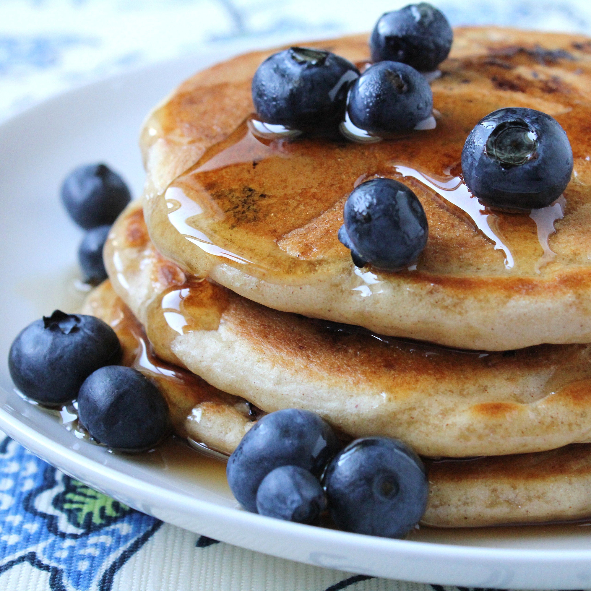

Blueberry Pancakes

Well worth the hour wait!
These blueberry pancakes are the most fabulous pancakes I've ever eaten.
Ingridients
- 1¼ cups all-purpose flour
- 1 tablespoon baking powder
- 1¼ teaspoons white sugar
- ½ teaspoon salt
- 1 cup milk
- 1 egg
- ½ tablespoon butter, melted
- ½ cup frozen blueberries, thawed
Steps
- Sift flour, baking powder, sugar, and salt together in a large bowl. Combine milk and egg in a small bowl. Stir egg mixture into flour mixture until just combined. Stir in melted butter, then fold in blueberries. Set aside for 1 hour.
- Heat a lightly oiled griddle or nonstick frying pan over medium-high heat.
- Pour or scoop the batter onto the hot griddle, using approximately 1/4 cup for each pancake; cook until bubbles appear on the surface, then flip and cook until golden brown on both sides. Serve hot.
Source
Back to the list